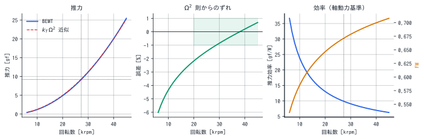
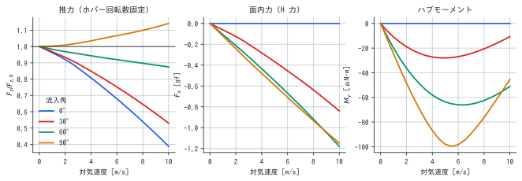
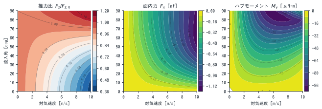
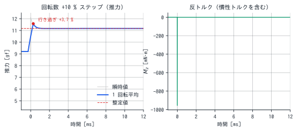
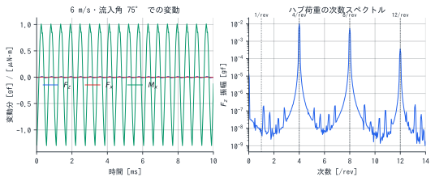
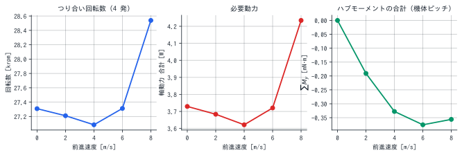

prop_sim / virtual wind tunnel
StampFly 1209 プロペラ
仮想風洞試験レポート
31 mm・4 枚のマイクロプロペラの 6 分力 (Fx, Fy, Fz, Mx, My, Mz) を、静止だけでなく 前進飛行・機体運動を含めて数値的に掃引し、 飛行制御系の設計にそのまま使える形の係数・微係数・周波数に落とした報告。
ホバー回転数 / 1 発
27,309rpm
9.20 gf、軸動力 0.93 W、FM 0.671
推力定数 kT
1.116e-8N·s²
T = kTΩ²、20k–45k rpm で ±1 % 以内
推力の整定時間
0.81ms
回転数ステップ後、±2 % に収まるまで。行き過ぎ +3.7 %
ブレード通過周波数
1,821Hz
4/rev。1/rev は 455 Hz
この報告の読み方
ここに載っている数字は計算結果であって実測ではない。 形状（平面形・翼断面）だけが実機の写真からの実測で、空力は翼素運動量理論による推定。 実測推力との突き合わせは 1 点（1 209 rad/s で 1 gf）しか無く、 較正は意図的に適用していない。1 点では「取付角がずれている」仮説と 「低 Reynolds 数で揚力が落ちている」仮説を区別できず、 どちらを選ぶかでホバー回転数の予測が 23 % 変わるためである。
したがって絶対値は ±20 % 程度の幅を見込んで読んでほしい。 一方で、この報告の主眼である 「速度が付くと推力がどう変わるか」「どの微係数がどの桁か」「何 Hz に何が出るか」 といった相対量・構造的な性質は、絶対値よりずっと頑健である。 制御系の設計では後者の方が効くことが多い。
座標系と符号 — 制御コードに写す前に必ず確認
本報告の 6 分力は prop_sim のハブ座標系で表してある。
| z 軸 | シャフト軸。推力が正になる向き（= 通常飛行では上） |
|---|---|
| x 軸 | 方位角 ψ = 0 の基準方向（ディスク面内） |
| y 軸 | z × x で決まる右手系 |
x を機首方向に合わせると y = z × x は左を向くので、
この系は FLU（前・左・上）になる。
多くの飛行制御ファームウェアが使う FRD / NED（前・右・下）とは y と z が反転している。
軸の対応（x = ロール, y = ピッチ, z = ヨー）は同じだが、正の向きが一部逆になる。
| 成分 | 軸 | 本報告（FLU）で正が意味するもの | FRD 慣習との比較 |
|---|---|---|---|
| Mx | ロール | +y(左) → +z(上) = 左が上がる = 右ロール | 一致 |
| My | ピッチ | +z(上) → +x(前) = 機首下げ | 逆（FRD の + は機首上げ） |
| Mz | ヨー | +x(前) → +y(左) = 機首左 | 逆（FRD の + は機首右） |
FRD 系に写すときは Fy, Fz, My, Mz の符号を反転する （x 軸まわりに 180° 回した関係）。ロール成分だけはそのままでよい。
本文中で「機首を起こす」「風上に向く」といった物理的な向きを述べるときは、 座標系によらない実際の運動で書いてある。数値の符号は上表で読み替えること。 たとえば真横 8 m/s で My = -76 μN·m は負なので、 FLU では機首上げを意味する。
前進飛行の条件は inflow_angle_deg = 90, inflow_azimuth_deg = 0、
すなわち機体速度ベクトルが v_hub = (V, 0, 0) = +x 方向へ前進。
inflow_angle_deg = 0 は v_hub = (0, 0, V) = 推力方向へ前進（真上昇）である。
静止推力特性 — Ω² 則はどこまで信じてよいか

飛行制御では推力とトルクを T = kTΩ²、Q = kQΩ² と置くのが普通である。
20 000–45 000 rpm で同定すると
| kT | 1.116e-8 | N·s² | T = kTΩ² (Ω は rad/s) |
|---|---|---|---|
| kQ | 3.919e-11 | N·m·s² | Q = kQΩ² |
| kQ/kT | 3.511 | mm | ヨー操作力／推力の交換比 |
ただしこの Ω² 則は低回転で破れる。 15 000 rpm で -3.1 %、8 000 rpm では -5.1 % ずれる。 原因は Reynolds 数で、ホバー点でも r/R = 0.75 の翼素で Re ≈ 11,845 しかない。回転数を下げるとさらに落ちて翼型性能が悪化するため、 推力は Ω² より速く減る。
制御系への含意
- ホバー付近を線形化して使う分には kT 一定でよい。
- 低スロットル域では推力が想定より出ない。 姿勢制御が下側に飽和しかけたとき、モデルベースの配分則は 「もっと下がるはず」の推力を前提にしてしまう。着陸接地直前や 急降下からの引き起こしで効いてくる。
- アイドル回転数を高めに取る、あるいは低回転域だけ kT を テーブル化するのが現実的な対策。
前進飛行 — 速度が付くと 6 分力はこう変わる
回転数をホバー値 (27,309 rpm) に固定したまま、対気速度と流入角を掃引する。 流入角はシャフト軸と進行方向のなす角で、0° = 真上昇、90° = 真横。 水平前進中の機体は前傾しているので、実際には 90° より少し小さい角度で流入する。


1. 推力は流入角で増えも減りもする
| 条件 | J | Fz/Fz0 | Fx [gf] | Mx [μN·m] | My [μN·m] |
|---|---|---|---|---|---|
| 真上昇 4 m/s | 0.282 | 0.807 | 0.00 | 0 | 0 |
| 真上昇 8 m/s | 0.563 | 0.539 | 0.00 | 0 | 0 |
| 流入角 60° 4 m/s | 0.141 | 0.943 | -0.43 | -112 | -58 |
| 流入角 60° 8 m/s | 0.282 | 0.897 | -0.92 | -243 | -62 |
| 真横 4 m/s | 0.000 | 1.035 | -0.48 | -119 | -87 |
| 真横 8 m/s | 0.000 | 1.100 | -0.93 | -265 | -76 |
真上昇 8 m/s で推力が 46 % 落ちる。 前進率 J = 0.56 に達し、翼素の迎角が全体に下がるためである。 逆に真横 8 m/s では推力が +10 % 増える（並進揚力）。 ロータが自分の後流から逃げるので誘導速度が下がり、同じ回転数でも迎角が回復する。
制御系への含意
- 上昇と水平移動で高度ループのゲインが逆方向にずれる。 上昇時は推力不足側（負のフィードバックが強まる = 自然な減衰）、 水平移動時は推力過剰側（高度が浮きやすい）。 水平加速の開始と同時に高度が持ち上がる挙動はこれで説明できる。
- この推力比は回転数によらずほぼ前進率 J だけで決まる。
18 000 / 27 310 / 38 000 rpm で比べても J = 0〜0.5 の範囲で
ばらつきは 0.4 % 以内だった。つまり
kT(J)の 1 次元テーブルとして実装できる。
2. 面内力とハブモーメント — 姿勢ループから見れば外乱
斜め流入では、進行方向側のブレードと後退側のブレードで相対速度が違う。 1 回転のあいだに翼素荷重が変動し、その平均としてディスク面内の力 Fx（H 力）とハブモーメント Mx, My が残る。
表を見ると、1 発あたりでは 進行方向と直交する Mx の方が大きい。 真横 8 m/s で Mx = -265 μN·m、My = -76 μN·m で、 比は 3.5 倍ある。前進側のブレードと後退側のブレードで 相対速度が違うことによる左右の揚力差（進行方向に直交する軸まわり）が主で、 流入分布の前後差による前後軸まわりの成分はそれより小さい。 ヒンジを持つヘリコプタのローターならフラッピングが 90° 遅れてこれをピッチに変換するが、 マイクロプロペラは実質剛体なので空力の非対称がそのままハブモーメントとして出る。
3. 4 発では Mx が消えて My だけが残る
ここが機体設計上いちばん重要な点である。回転方向を反転すると 6 分力は x–z 面に関して厳密に鏡映になる （Fy, Mx, Mz が符号反転、Fx, Fz, My は不変。 本パッケージのテストで検証済み）。 クアッドは CW 2 発・CCW 2 発なので、
| Mx（ロール） | 逆回転ペアで打ち消し合う |
|---|---|
| My（ピッチ） | 4 発ぶんそのまま足し合わさる |
つまり 1 発では小さかった My の方が機体レベルでは効く。 真横 8 m/s なら 4 発合計で 306 μN·m、 ホバー時の空力トルク 1 発ぶん（0.326 mN·m）の 23 %（1 発あたり）に相当する。
制御系への含意
- ハブモーメントは機体からは速度にほぼ比例するピッチモーメント外乱 として見える。一種の風見安定であり、姿勢ループが速度ループと結合する。 内側ループだけで設計すると外側で予想外の位相が付く。
- この項は位置制御のステップ応答に効く。 前進を始めた瞬間に機首が起きようとし、姿勢ループがそれを打ち消す間に 速度応答が遅れる。下の ∂My/∂u をフィードフォワードで打ち消せる。
- ロール軸は打ち消しに頼っているので、4 発の回転数が揃わない （旋回中・姿勢制御中は必ず揃わない）とロール外乱が残る。 高速前進しながらのロール操作でクセが出るのはこれが一因になりうる。
ホバー点まわりの線形微係数
制御則を設計するときに実際に使うのはこの表である。 ホバー点（1 発 9.20 gf, 27,309 rpm）まわりで 各入力を微小変化させ、6 分力の変化を差分で取った。
| 微係数 | 値 | 単位 | 意味 / 使いどころ |
|---|---|---|---|
| ∂Fz/∂Ω | 6.416e-5 | N·s | 推力ゲイン。理論値 2T/Ω = 6.310e-5 と一致し、Ω² 則の局所整合が取れている |
| ∂Mz/∂Ω | 2.206e-7 | N·m·s | ヨー操作力ゲイン。4 発の差動で使う |
| ∂Fz/∂w | -0.0033 | N/(m/s) | ヒーブ減衰。上昇すると推力が減る自然な負帰還 |
| Zw (4 発 / 機体質量) | -0.36 | 1/s | 高度ループの開ループ極。時定数 2.76 s の 1 次遅れ相当 |
| ∂Fx/∂u | -0.00119 | N/(m/s) | H 力による速度減衰 |
| Xu (4 発 / 機体質量) | -0.129 | 1/s | ロータ由来の速度減衰。機体の空気抵抗とは別に効く |
| ∂My/∂u | -2.471e-5 | N·m/(m/s) | 速度 → ピッチ結合。4 発で -99 μN·m/(m/s) |
| ∂My/∂q | -7.777e-7 | N·m·s | 空力のピッチレート減衰（同軸） |
| ∂Mx/∂q | -4.775e-5 | N·m·s | ジャイロによる軸間結合。ピッチレートがロールを生む。 空力ぶんは 9.995e-9 で 61 倍の差があり、 ほぼ全部がジャイロ |
| −JzΩ | -4.776e-5 | N·m·s | ロータの角運動量。∂Mx/∂q と一致することで ジャイロ項が正しく入っていることが確認できる |
| 差動 ±500 rpm のロール | 0.272 | mN·m | アーム長 40 mm 想定。姿勢操作力の見積り |
| 差動 ±2000 rpm のロール | 1.088 | mN·m | 同上 |
使い方
- 高度ループ: Zw = -0.36 1/s は 「何もしなくても上昇速度が 2.76 s で頭打ちになる」ことを意味する。 この極より十分速い帯域を狙わないと、積分項が効きすぎて上下に揺れる。
- 速度ループ: Xu はロータだけの寄与で、機体の抗力を加えるとさらに大きくなる。 ホバー保持で速度が勝手に減衰する量として効く。
- 姿勢ループ: ∂My/∂u をフィードフォワードで打ち消すと、 前進開始時のピッチ外乱が減って位置制御の応答が素直になる。
- ジャイロは同軸ではなく軸間に出る: JzΩ = 4.776e-5 N·m·s なので、 ピッチレート 10 rad/s でロール方向に 478 μN·m が出る。 これはホバーの空力トルクの 146 % に達し、 同軸の空力減衰 ∂My/∂q より 61 倍大きい。 速い姿勢運動ではロールとピッチが強く連成する。 4 発は回転方向が逆のペアなので機体全体では大半が打ち消し合うが、 姿勢制御中は 4 発の回転数が必ず食い違うので残差が出る。
過渡応答 — 姿勢ループの帯域は何で決まるか

回転数が瞬時に変わっても、ロータの後流（誘導速度）は新しい平衡にすぐには移らない。 これを動的インフローという。時定数は Pitt–Peters 系の見かけ質量から τi = 0.85/(4νΩ) = 0.48 ms。
その結果、応答は単純な遅れではなく行き過ぎを伴う。 回転数が上がった瞬間は誘導速度がまだ小さいので翼素の迎角が大きく、 推力が定常値を +3.7 % 超える。 その後、後流が発達して誘導速度が上がると定常値へ落ち着く。 実測でよく見える「推力が行き過ぎてから収束する」挙動がこれである。
| 行き過ぎ量 | +3.65 | % |
|---|---|---|
| ピーク到達 | 0.275 | ms |
| 整定時間 (±2 %) | 0.805 | ms |
| 行き過ぎ後の減衰時定数 | 0.212 | ms |
| 推力 (前 → ピーク → 後) | 9.20 → 11.58 → 11.17 | gf |
制御系への含意
- プロペラの空力は姿勢ループの帯域を制限しない。 全部終わるのに 0.81 ms しかかからず、 実機のモータ・ESC の回転数応答（数十 ms）より 1〜2 桁速い。 帯域を決めているのはプロペラではなく駆動系である。 この機体規模でレート制御を 1 kHz 級で回しても、 プロペラ側が足を引っ張ることはない。
- 行き過ぎ +3.7 % は制御にとってはむしろ有利な 位相進みとして働く。ただしモデルベースの推力配分で 「回転数 → 推力は Ω² で瞬時」と仮定していると、 過渡だけ数 % ずれることは意識しておくとよい。
- 反トルクには回転慣性による項 −JzdΩ/dt が重なる（右図の尖り）。 回転数を急変させるとヨー方向に一時的な逆トルクが出る。 スロットル急変時のヨー外れはこれ。 4 発同時にスロットルを動かすと 4 発ぶん同符号で足し合わさるので、 上昇・下降の開始時にヨーが振れる。
変動成分 — IMU とノッチフィルタの設計に効く周波数

斜め流入ではブレード 1 枚あたりの荷重は 1 回転に 1 回変動するが、 4 枚合わせたハブ荷重には 4 の倍数の次数だけが残る （回転系 → 静止系の次数変換）。したがって機体が受ける振動の主成分は 4/rev = 1,821 Hz であって、1/rev ではない。
| 成分 | 周波数 | 振幅 | 出どころ |
|---|---|---|---|
| 1/rev | 455 Hz | 2.13 mN / μm | 質量アンバランス（重心ずれ 1 μm あたり） |
| 4/rev (BPF) | 1,821 Hz | 0.0100 gf | 斜め流入による空力変動（平均推力の 0.11 %） |
| 4/rev モーメント | 1,821 Hz | 1.1 μN·m | 同上、Mx |
制御系への含意
- ノッチは 1/rev ではなく 4/rev に置く。 ホバーで 1,821 Hz、スロットル全開では 2 500 Hz を超える。 回転数追従型のノッチ（ダイナミックノッチ）でないと外し続ける。
- IMU のサンプリングとエイリアシング。 1 kHz サンプリングだと 1,821 Hz は折り返して 179 Hz 付近の偽信号になり、姿勢推定に直接漏れる。 アナログ側のアンチエイリアスフィルタか、より高いサンプリングが要る。
- 質量アンバランスは 1/rev で出る。 Ω² に比例するので高回転で急に効き、重心ずれ 10 μm でホバー推力の 24 % に達する。 スペクトルで 1/rev が立っていればアンバランス、4/rev なら空力、と切り分けられる。
機体レベル — 水平飛行のつり合い
4 発合わせて 36.8 g を支えながら水平に飛ぶ状態を解く。 機体の抗力（CDA = 0.0035 m² と仮定）と推力の水平成分がつり合う 前傾角を求め、その姿勢で必要な推力が出る回転数を逆算した。

| 速度 [m/s] | 前傾 [deg] | 回転数 [rpm] | 軸動力 合計 [W] | ΣMy [mN·m] |
|---|---|---|---|---|
| 0 | 0.0 | 27,309 | 3.73 | 0.000 |
| 2 | 1.4 | 27,211 | 3.68 | -0.191 |
| 4 | 5.4 | 27,085 | 3.62 | -0.328 |
| 6 | 12.1 | 27,312 | 3.72 | -0.376 |
| 8 | 20.8 | 28,539 | 4.23 | -0.356 |
制御系への含意
- 前進速度が上がっても必要回転数はほとんど増えない。 並進揚力で推力が上がる分と、前傾で必要推力が増える分がかなり相殺する。 「前進すると電池が持たない」の主因はプロペラではなく機体の抗力と姿勢角である。
- ΣMy は速度とともに単調に増える。 これは姿勢ループが定常的に打ち消し続けなければならないバイアスで、 結果として 4 発の回転数に定常差が付く。その分だけ操作余裕が削られる。
- この表はフィードフォワードのテーブルとして直接使える。 速度指令から前傾角と基準回転数を先に与えれば、フィードバックの仕事が減る。
この結果の限界と、次に測るべきこと
1. 較正が 1 点しかない
回転数を変えた推力を 2〜3 点測れば決着する。 20 000 rpm と 30 000 rpm を測れば、「取付角ずれ」仮説と「低 Re」仮説は 30〜60 % 食い違うので区別できる。それまでは較正を当てない方針としている。
2. 翼型の抗力は過小評価の可能性がある
同梱の 2 次元 CFD（OpenFOAM、円柱 Re = 20/40 の既知解で検証済み）で 実測断面を Re = 12 000・迎角 4° で解いたところ、 cl は経験式より 10 % 低く、cd は 70 % 高いという結果が出た。 ただしこの断面は Re = 12 000 で定常解を持たず（周期 6.5 s のリミットサイクル）、 迎角 0° と 8° は統計的に収束しなかったため、ポーラ全体としてはまだ確定していない。 2 次元計算は剥離せん断層の 3 次元不安定を表現できず剥離を過大に出す傾向があるので、 この 70 % もいくらか誇張されている可能性がある。
3. モデルそのものの限界
- 翼素運動量理論は後流の旋回を無視するため推力を約 4 % 過大評価する （揚力線 + 渦後流モデルとの比較で定量化済み）。
- ボルテックスリング状態（降下率 ≈ 誘導速度）では運動量理論が成立しない。 急降下時の推力は信用できない。
- 多ロータ間の干渉、機体との干渉は入っていない。 実機の 4 発は互いの後流を吸うので、単独ロータより効率が落ちる。
- 動的失速を入れていないので、非常に速い姿勢運動での過渡は再現しない。
4. 実測で優先的に埋めるべき順番
- 推力 vs 回転数を 3 点以上 — 較正が決まり、絶対値の幅が一気に縮む
- トルク（または電流） — 抗力側が決まり、FM と必要動力が確定する
- 風洞での斜め流入 6 分力 — ハブモーメントと H 力の実測。 本パッケージが再現しようとしている試験そのもの
- 回転数ステップの推力波形 — 動的インフローの時定数の検証
再現方法
この報告の図と数値はすべて次のコマンドで再生成できる。乱数は使っていないので結果は決定的である。
git clone https://github.com/kouhei1970/prop_sim
cd prop_sim && pip install -e ".[plot]"
python examples/11_virtual_wind_tunnel.py # 図と data/summary.json を生成
python docs/report/build.py # このページを生成
生データは data/ に CSV で置いてある
（静止掃引、流入角ごとの前進飛行、ステップ応答）。
data/summary.json には本文中の数値がすべて入っている。
| 関連ドキュメント | 内容 |
|---|---|
| STAMPFLY_1209.md | 形状の実測、性能推定、計測要求仕様 |
| MODELS.md | 空力モデル Lv0–Lv4 の比較と限界 |
| CFD.md | OpenFOAM による 2 次元翼型 CFD と検証 |